Soil contamination maps by kriging
Source:vignettes/articles/core_Soil_Kriging.Rmd
core_Soil_Kriging.RmdWhy this article?
Every spacemodR simulation starts from a raster of soil
contamination
(e.g. ground_concentration_cd_compressed.tif used in all
the other articles). In the field, however, soil is only sampled at a
few hundred points. This article explains, step by
step, how to go from these points to a continuous raster, and which
interpolation method gives the most reliable map for the Metaleurop
site.
The workflow has 8 steps:
| Step | What we do | spacemodR function |
|---|---|---|
| 1 | Look at the data and choose the scale (log10) | data(soil_metaleurop) |
| 2 | Understand the large-scale trend (distance to the smelter) | — |
| 3 | Build the output grid and the covariate rasters |
soil_grid(),
source_covariates()
|
| 4 | Compute the empirical variogram | soil_variogram() |
| 5 | Fit a variogram model | fit_soil_variogram() |
| 6 | Compare interpolation methods by cross-validation |
cv_soil(),
kernel_smooth_soil()
|
| 7 | Produce the final Cd, Pb and Zn rasters (+ uncertainty) | krige_soil() |
| 8 | Check the maps and plug them into spacemodR | load_raster_extdata() |
Short answer (justified in step 6): for the three
metals, the best method is kriging with external drift
(KED) of log10(concentration), using
log10(distance to the smelter) as drift and an
exponential variogram.
Step 1 — The data
The data set soil_metaleurop contains 595 topsoil
samples collected around the former Metaleurop Nord lead and zinc
smelter (northern France), with total Cd, Pb and Zn concentrations
(mg/kg). The coordinates are in Lambert-93 (EPSG:2154), in
metres: this is required, since kriging works with
distances.
data(soil_metaleurop)
soil_metaleurop
#> Simple feature collection with 595 features and 8 fields
#> Geometry type: POINT
#> Dimension: XY
#> Bounding box: xmin: 698603.6 ymin: 7033174 xmax: 706601.9 ymax: 7041519
#> Projected CRS: RGF93 v1 / Lambert-93
#> First 10 features:
#> id usage dist angle wind cd pb zn
#> 1 20-01S L 2749.259 247.8030 5.7 3.5000000 211.00000 387.00000
#> 2 21-01S L 2562.256 249.2580 5.7 2.1000000 162.00000 430.00000
#> 3 22-01S L 2098.059 266.5827 3.8 2.8000000 188.00000 307.00000
#> 4 23-01S L 1983.692 279.7745 2.1 4.3495935 339.43089 516.26016
#> 5 23-02S L 1820.005 278.9970 2.1 4.5426829 463.41463 740.85366
#> 6 23-03S L 1902.154 267.9507 3.8 3.9165819 387.58901 839.26755
#> 7 23-04S L 1754.204 265.4483 3.8 8.5830785 706.42202 1131.49847
#> 8 23-05S L 1725.637 275.9000 2.1 0.7080366 38.65717 98.37233
#> 9 24-01S L 1677.324 290.3067 1.4 7.9000000 666.00000 1481.00000
#> 10 25-01S L 1433.359 309.1812 1.4 7.9000000 575.00000 691.00000
#> geometry
#> 1 POINT (698603.6 7035783)
#> 2 POINT (698754.5 7035912)
#> 3 POINT (699062.2 7036691)
#> 4 POINT (699205.7 7037152)
#> 5 POINT (699362.5 7037098)
#> 6 POINT (699256.3 7036747)
#> 7 POINT (699407.8 7036674)
#> 8 POINT (699442.7 7036991)
#> 9 POINT (699589.6 7037394)
#> 10 POINT (700053.5 7037713)
summary(sf::st_drop_geometry(soil_metaleurop)[, c("cd", "pb", "zn")])
#> cd pb zn
#> Min. : 0.100 Min. : 16.0 Min. : 44.0
#> 1st Qu.: 3.584 1st Qu.: 192.8 1st Qu.: 290.1
#> Median : 5.200 Median : 287.3 Median : 425.0
#> Mean : 12.615 Mean : 567.1 Mean : 702.6
#> 3rd Qu.: 9.150 3rd Qu.: 519.5 3rd Qu.: 697.5
#> Max. :2402.062 Max. :41958.8 Max. :38762.9The concentrations are extremely skewed: for cadmium
the median is around 5 mg/kg but the maximum is above 2000 mg/kg.
Kriging is a linear method (a weighted average of neighbouring values)
and is very sensitive to such extreme values. On a log10
scale, the distributions become nearly symmetric (log-normal
data), so all the interpolation is done on
log10(concentration). This is the default
(log10 = TRUE) in all spacemodR functions.
long <- data.frame(
metal = rep(c("Cd", "Pb", "Zn"), each = nrow(soil_metaleurop)),
value = c(soil_metaleurop$cd, soil_metaleurop$pb, soil_metaleurop$zn)
)
p_raw <- ggplot(long, aes(value)) +
geom_histogram(bins = 40, fill = "grey40") +
facet_wrap(~metal, scales = "free") +
labs(title = "Raw scale (mg/kg)", x = NULL) + theme_minimal()
p_log <- ggplot(long, aes(log10(value))) +
geom_histogram(bins = 40, fill = "steelblue") +
facet_wrap(~metal, scales = "free") +
labs(title = "log10 scale", x = NULL) + theme_minimal()
p_raw / p_log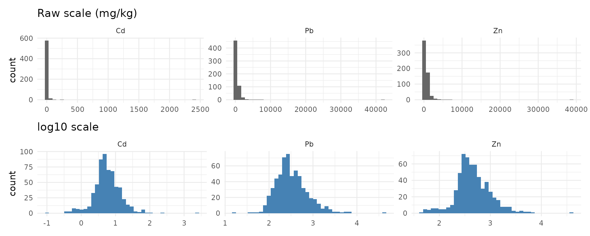
The three metals are highly correlated (same emission source), so the same method should suit all of them:
cor(log10(sf::st_drop_geometry(soil_metaleurop)[, c("cd", "pb", "zn")]))
#> cd pb zn
#> cd 1.0000000 0.8993741 0.9198521
#> pb 0.8993741 1.0000000 0.8907395
#> zn 0.9198521 0.8907395 1.0000000Step 2 — The large-scale trend: distance to the smelter
Contamination comes from the atmospheric fallout of a single
point source: the smelter chimney. The data set gives the
distance of each sample to the smelter (dist), but not the
smelter location itself. We recover it by looking for the point whose
distance to every sample best matches dist (a simple
least-squares triangulation):
xy <- sf::st_coordinates(soil_metaleurop)
misfit <- function(p) {
sum((sqrt((xy[, 1] - p[1])^2 + (xy[, 2] - p[2])^2) - soil_metaleurop$dist)^2)
}
fit <- optim(colMeans(xy), misfit)
smelter <- sf::st_sfc(sf::st_point(fit$par), crs = 2154)
smelter
#> Geometry set for 1 feature
#> Geometry type: POINT
#> Dimension: XY
#> Bounding box: xmin: 701155.8 ymin: 7036798 xmax: 701155.8 ymax: 7036798
#> Projected CRS: RGF93 v1 / Lambert-93
# average mismatch with the `dist` column (m):
sqrt(fit$value / nrow(xy))
#> [1] 1.035147The match is almost perfect (about 1 m), and the point lies at 3.0162° E, 50.4287° N, i.e. on the former Metaleurop site at Noyelles-Godault.
ggplot() +
geom_sf(data = soil_metaleurop, aes(colour = log10(cd)), size = 1.8) +
geom_sf(data = smelter, shape = 8, size = 5, colour = "red", stroke = 1.5) +
scale_colour_viridis_c(name = "log10 Cd\n(mg/kg)") +
labs(title = "Sampling points (red star: smelter)") +
theme_minimal()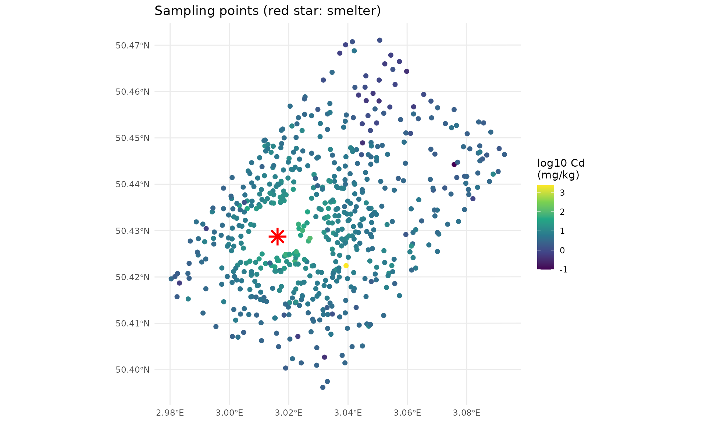
Plotting the concentrations against the distance on a log-log scale reveals a strong linear trend: concentrations decrease as a power law of the distance, as expected for atmospheric deposition.
long$dist <- rep(soil_metaleurop$dist, 3)
ggplot(long, aes(log10(dist), log10(value))) +
geom_point(alpha = 0.3) +
geom_smooth(method = "lm", colour = "red") +
facet_wrap(~metal, scales = "free_y") +
labs(x = "log10(distance to smelter, m)", y = "log10(concentration)") +
theme_minimal()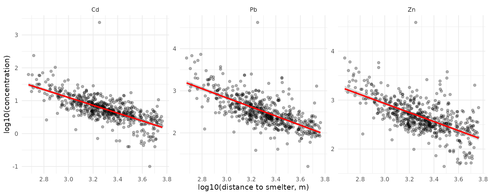
The distance alone explains about half of the variance of log10(Cd). This is a precious information for interpolation, especially far from the samples: ordinary kriging would there predict the global mean of the data, whereas a model including the distance keeps decreasing away from the smelter. This motivates testing kriging with external drift below.
Step 3 — Output grid and covariate rasters
3a. The grid
soil_grid() builds an empty raster around the points,
with a given resolution res and a margin
around the bounding box of the samples. Here: 25 m cells and 1 km of
margin, as for the rasters already shipped with the package.
grid <- soil_grid(soil_metaleurop, res = 25, margin = 1000)
grid
#> class : SpatRaster
#> size : 415, 401, 1 (nrow, ncol, nlyr)
#> resolution : 25, 25 (x, y)
#> extent : 697600, 707625, 7032150, 7042525 (xmin, xmax, ymin, ymax)
#> coord. ref. : RGF93 v1 / Lambert-93 (EPSG:2154)3b. The covariates
source_covariates() computes, for every cell of the
grid:
-
log10_dist: the log10 of the distance to the source (the drift found in step 2); -
wind(optional): the frequency of the wind sector in which the cell lies, seen from the source. The data set gives this frequency (wind) for each sample in 20° sectors, so we rebuild the wind rose from it:
sector <- (round(soil_metaleurop$angle / 20) %% 18) * 20
wind_rose <- aggregate(
soil_metaleurop$wind, by = list(direction = sector),
FUN = function(x) as.numeric(names(which.max(table(x))))
)
names(wind_rose)[2] <- "freq"
wind_rose
#> direction freq
#> 1 0 7.0
#> 2 20 8.5
#> 3 40 6.8
#> 4 60 8.8
#> 5 80 11.1
#> 6 100 8.0
#> 7 120 5.2
#> 8 140 4.4
#> 9 160 4.3
#> 10 180 4.9
#> 11 200 4.2
#> 12 220 6.1
#> 13 240 5.7
#> 14 260 3.8
#> 15 280 2.1
#> 16 300 1.4
#> 17 320 2.7
#> 18 340 5.1
covariates <- source_covariates(grid, smelter, wind_rose = wind_rose)
covariates
#> class : SpatRaster
#> size : 415, 401, 2 (nrow, ncol, nlyr)
#> resolution : 25, 25 (x, y)
#> extent : 697600, 707625, 7032150, 7042525 (xmin, xmax, ymin, ymax)
#> coord. ref. : RGF93 v1 / Lambert-93 (EPSG:2154)
#> source(s) : memory
#> names : log10_dist, wind
#> min values : 1.39794, 1.4
#> max values : 3.935608, 11.1
plot_cov <- function(layer, title) {
ggplot() +
geom_spatraster(data = covariates[[layer]]) +
scale_fill_viridis_c(name = NULL) +
geom_sf(data = smelter, shape = 8, size = 3, colour = "red") +
labs(title = title) + theme_minimal()
}
plot_cov("log10_dist", "log10(distance to the smelter, m)") +
plot_cov("wind", "Wind frequency of the sector (%)")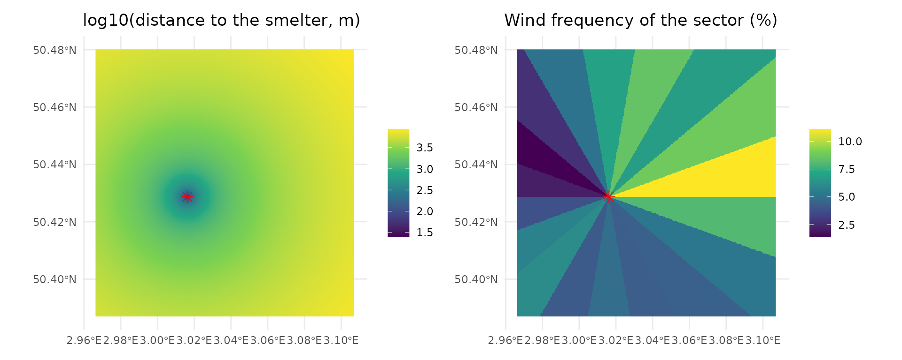
The wind layer shows that the north-east of the smelter is the most exposed, downwind of the dominant south-westerly winds.
Step 4 — The empirical variogram
Kriging relies on one idea: two close samples are more alike than two distant samples. The semi-variogram quantifies this: for all pairs of points separated by a distance (grouped in distance classes, or lags),
where is the log10 concentration and the number of pairs. A variogram that increases with means there is spatial structure that kriging can exploit.
soil_variogram() computes it. By default it uses
distances up to one third of the study area diagonal
(cutoff) in 15 classes (width).
v_ok <- soil_variogram(soil_metaleurop, "cd")
head(v_ok)
#> np dist gamma
#> 1 1260 174.5234 0.05594691
#> 2 3429 396.6164 0.06124015
#> 3 5228 648.8699 0.08059952
#> 4 6849 904.2774 0.09498779
#> 5 8100 1159.0879 0.12406657
#> 6 9379 1415.9839 0.13137464When a drift is used (KED), the spatial structure must be described on the residuals of the trend, not on the raw values; this is done by passing the covariates:
v_ked <- soil_variogram(soil_metaleurop, "cd",
covariates = covariates[["log10_dist"]])
both <- rbind(
data.frame(as.data.frame(unclass(v_ok)), type = "raw values (OK)"),
data.frame(as.data.frame(unclass(v_ked)), type = "residuals of log10(dist) (KED)")
)
ggplot(both, aes(dist, gamma, colour = type)) +
geom_point(aes(size = np)) + geom_line() +
expand_limits(y = 0) +
labs(x = "Distance h (m)", y = expression(gamma(h)),
colour = NULL, size = "Number of pairs",
title = "Empirical variograms of log10(Cd)") +
theme_minimal()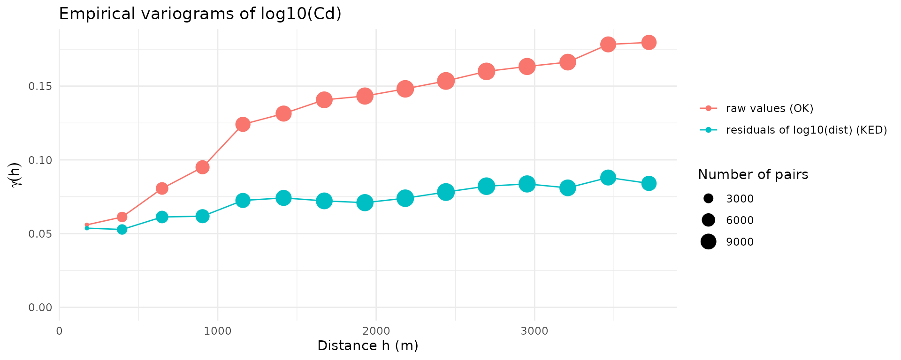
Reading the plot:
- the raw variogram keeps increasing over several kilometres: this is the signature of the large-scale trend (values decrease with the distance to the smelter);
- once the trend is removed, the residual variogram is about half as high and almost flat beyond 1–1.5 km: the remaining spatial dependence is short-range, the long-range part being explained by the distance;
- neither curve starts at 0: the value at the origin is the nugget, i.e. variability between very close samples (measurement error, very local heterogeneity, the extreme outlier of the data set…).
Step 5 — Fitting a variogram model
Kriging needs a continuous function , so a model is fitted to the empirical points. Every model has three parameters:
- nugget : the jump at the origin;
- partial sill : the additional variance reached at large distances (total sill = nugget + partial sill);
- range : how fast the sill is reached (the distance at which samples stop being correlated is about for the exponential model, for the spherical one).
Four models are available: exponential ("Exp"),
spherical ("Sph"), Gaussian ("Gau") and Matérn
("Mat"). fit_soil_variogram() fits them by
weighted least squares (more weight to short distances and to classes
with many pairs) and returns the one with the lowest error, together
with the comparison table.
m_ok <- fit_soil_variogram(v_ok, model = c("Exp", "Sph", "Gau"))
m_ok
#> Variogram model: Gau
#> nugget = 0.05312 | partial sill = 0.1073 | range = 1235 m
#> weighted SSE = 1.386e-05
#> fitted on values (constant mean)
m_ok$comparison
#> model nugget psill range sse
#> 1 Gau 0.05311783 0.1072776 1235.369 1.386473e-05
#> 2 Sph 0.04211793 0.1231917 2887.673 2.587145e-05
#> 3 Exp 0.03899008 0.1726382 2113.585 3.157755e-05
m_ked <- fit_soil_variogram(v_ked, model = c("Exp", "Sph", "Gau"))
m_ked
#> Variogram model: Gau
#> nugget = 0.05244 | partial sill = 0.02688 | range = 1220 m
#> weighted SSE = 5.879e-06
#> fitted on residuals of the drift: log10_dist
(plot(m_ok) + ggtitle("OK: raw log10(Cd)")) +
(plot(m_ked) + ggtitle("KED: residuals of the distance trend")) +
plot_layout(guides = "collect")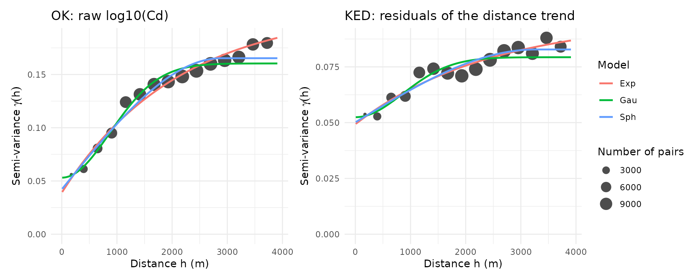
The models are very close to each other. The best fit to the variogram points does not necessarily give the best map: this is what the old Python workflow used (ranking models by the of the variogram fit). A more reliable criterion is the quality of the predictions, assessed by cross-validation in the next step.
Step 6 — Which method gives the best map? Cross-validation
6a. Principle
In k-fold cross-validation (cv_soil()),
the points are split into 10 groups. Each group is removed in turn, the
whole method (including the variogram fit) is run on the 9 other groups,
and the removed points are predicted. Comparing predictions with
observations gives:
- RMSE (root mean squared error, log10 units) — the main criterion, lower is better;
- MAE (mean absolute error) — less sensitive to the outlier;
- bias (mean error) — should be close to 0;
- R2 — share of the variance of the data reproduced by the predictions.
Two ways of making the groups are used:
- random folds: the removed points usually have close neighbours left, this measures the quality of the interpolation between samples;
-
spatial folds (
block_size = 1500): whole 1.5 km × 1.5 km blocks are removed, which mimics the prediction of areas without any sample nearby (e.g. the margin of the map). The block size is of the order of the distance at which the residual variogram flattens.
6b. The candidates
-
Kernel smoothing
(
kernel_smooth_soil()): a Gaussian weighted mean of the samples, built with the dispersal kernel of the package (compute_kernel()) and a convolution (terra::focal()). Simple, but it ignores the spatial structure and its smoothing radius must be chosen. -
Ordinary kriging (OK) with an exponential,
spherical or Gaussian variogram: what the old Python workflow
(
pykrige) did. -
Kriging with external drift (KED) on
log10_dist: a linear trend in log-distance to the smelter + kriging of the residuals. -
KED on
log10_dist+wind.
candidates <- list(
"Kernel (radius 300 m)" = list(method = "kernel", radius = 300),
"OK - Exp" = list(model = "Exp"),
"OK - Sph" = list(model = "Sph"),
"OK - Gau" = list(model = "Gau"),
"KED dist - Exp" = list(model = "Exp", covariates = covariates[["log10_dist"]]),
"KED dist + wind - Exp" = list(model = "Exp", covariates = covariates)
)
run_cv <- function(metal, block_size = NULL) {
do.call(rbind, lapply(names(candidates), function(nm) {
args <- c(list(points = soil_metaleurop, value = metal,
block_size = block_size), candidates[[nm]])
cbind(method = nm, summary(do.call(cv_soil, args)))
}))
}
cv_results <- do.call(rbind, lapply(c("cd", "pb", "zn"), function(metal) {
rbind(cbind(metal = metal, folds = "random", run_cv(metal)),
cbind(metal = metal, folds = "spatial", run_cv(metal, block_size = 1500)))
}))
cv_results$method <- factor(cv_results$method, levels = names(candidates))
knitr::kable(
cv_results[order(cv_results$folds, cv_results$metal, cv_results$RMSE),
c("folds", "metal", "method", "RMSE", "MAE", "bias", "R2", "n")],
digits = 3, row.names = FALSE
)| folds | metal | method | RMSE | MAE | bias | R2 | n |
|---|---|---|---|---|---|---|---|
| random | cd | KED dist - Exp | 0.244 | 0.156 | 0.000 | 0.624 | 587 |
| random | cd | OK - Gau | 0.246 | 0.157 | 0.001 | 0.617 | 587 |
| random | cd | KED dist + wind - Exp | 0.246 | 0.158 | 0.001 | 0.617 | 587 |
| random | cd | OK - Sph | 0.249 | 0.161 | 0.000 | 0.607 | 587 |
| random | cd | OK - Exp | 0.251 | 0.162 | 0.000 | 0.603 | 587 |
| random | cd | Kernel (radius 300 m) | 0.251 | 0.165 | 0.005 | 0.602 | 587 |
| random | pb | KED dist + wind - Exp | 0.232 | 0.159 | 0.000 | 0.596 | 587 |
| random | pb | KED dist - Exp | 0.233 | 0.159 | 0.000 | 0.593 | 587 |
| random | pb | OK - Gau | 0.237 | 0.161 | 0.001 | 0.581 | 587 |
| random | pb | OK - Sph | 0.239 | 0.163 | 0.000 | 0.574 | 587 |
| random | pb | Kernel (radius 300 m) | 0.240 | 0.166 | 0.005 | 0.570 | 587 |
| random | pb | OK - Exp | 0.241 | 0.165 | 0.000 | 0.566 | 587 |
| random | zn | KED dist - Exp | 0.223 | 0.157 | -0.001 | 0.584 | 587 |
| random | zn | KED dist + wind - Exp | 0.224 | 0.156 | -0.001 | 0.583 | 587 |
| random | zn | OK - Gau | 0.227 | 0.157 | -0.001 | 0.572 | 587 |
| random | zn | OK - Sph | 0.227 | 0.158 | -0.002 | 0.570 | 587 |
| random | zn | OK - Exp | 0.228 | 0.160 | -0.002 | 0.565 | 587 |
| random | zn | Kernel (radius 300 m) | 0.230 | 0.164 | 0.001 | 0.557 | 587 |
| spatial | cd | KED dist - Exp | 0.245 | 0.160 | 0.007 | 0.621 | 587 |
| spatial | cd | KED dist + wind - Exp | 0.251 | 0.167 | 0.010 | 0.602 | 587 |
| spatial | cd | OK - Exp | 0.251 | 0.165 | -0.002 | 0.602 | 587 |
| spatial | cd | OK - Sph | 0.253 | 0.169 | -0.003 | 0.595 | 587 |
| spatial | cd | OK - Gau | 0.253 | 0.168 | 0.008 | 0.594 | 587 |
| spatial | cd | Kernel (radius 300 m) | 0.270 | 0.187 | 0.006 | 0.539 | 587 |
| spatial | pb | KED dist - Exp | 0.244 | 0.171 | 0.006 | 0.553 | 587 |
| spatial | pb | KED dist + wind - Exp | 0.245 | 0.172 | 0.008 | 0.550 | 587 |
| spatial | pb | OK - Sph | 0.250 | 0.174 | -0.002 | 0.534 | 587 |
| spatial | pb | OK - Exp | 0.252 | 0.176 | -0.004 | 0.527 | 587 |
| spatial | pb | OK - Gau | 0.252 | 0.176 | 0.004 | 0.527 | 587 |
| spatial | pb | Kernel (radius 300 m) | 0.274 | 0.202 | 0.006 | 0.440 | 587 |
| spatial | zn | KED dist - Exp | 0.232 | 0.168 | 0.004 | 0.551 | 587 |
| spatial | zn | KED dist + wind - Exp | 0.237 | 0.172 | 0.005 | 0.530 | 587 |
| spatial | zn | OK - Gau | 0.239 | 0.172 | 0.001 | 0.525 | 587 |
| spatial | zn | OK - Exp | 0.239 | 0.175 | -0.002 | 0.524 | 587 |
| spatial | zn | OK - Sph | 0.240 | 0.176 | 0.000 | 0.518 | 587 |
| spatial | zn | Kernel (radius 300 m) | 0.265 | 0.198 | 0.007 | 0.413 | 587 |
ggplot(cv_results, aes(x = RMSE, y = method, colour = folds)) +
geom_point(size = 3) +
facet_wrap(~metal, scales = "free_x") +
scale_y_discrete(limits = rev) +
labs(x = "Cross-validation RMSE (log10 units, lower is better)", y = NULL,
colour = "Folds") +
theme_minimal()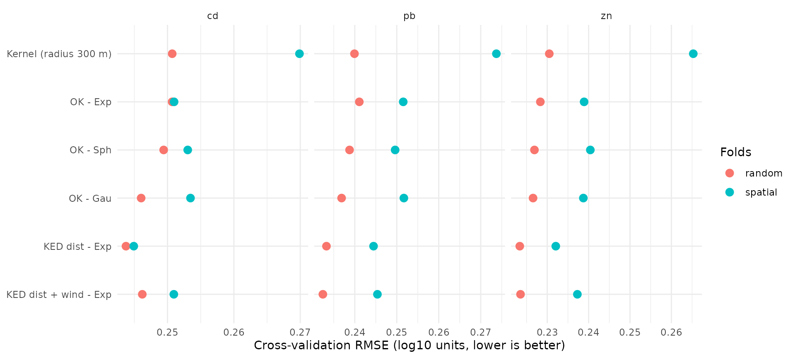
6c. Conclusion of the comparison
- Kernel smoothing is competitive with random folds (it behaves like a smooth ordinary kriging), but it is clearly the worst with spatial folds: far from the samples, it simply averages whatever lies within its window, without any model of how values evolve with distance.
- The variogram model of ordinary kriging (Exp / Sph / Gau) changes the error only marginally.
- KED with the distance to the smelter gives the lowest error for the three metals, and the gain is largest with spatial folds: the drift is most useful where samples are scarce.
- Adding the wind does not bring a consistent improvement (once the distance is known, the wind frequency does not help predicting, and an extra parameter adds noise). It is not retained.
We also tested, outside this article, a generalized additive model
(mgcv::gam(log10(cd) ~ log10(dist) + wind + s(x, y))) and a
random forest (ranger) on coordinates, distance and wind:
neither beat KED, so no additional package dependency is needed.
Retained method: KED, drift = log10(distance to the smelter), exponential variogram, on log10 concentrations.
The exponential model is kept (rather than the one with the best variogram fit) because it is the most robust across metals in spatial cross-validation, and it is the classical choice for contaminated soils (continuous but rough surfaces).
Step 7 — Final rasters of Cd, Pb and Zn
krige_soil() does steps 4, 5 and the prediction in one
call. To obtain maps that can directly replace the rasters already used
in spacemodR, we use the existing raster as template (same
extent and resolution).
template <- load_raster_extdata("ground_concentration_cd_compressed.tif")
dist_template <- source_covariates(template, smelter) # layer "log10_dist"
soil_maps <- lapply(c("cd", "pb", "zn"), function(metal) {
krige_soil(soil_metaleurop, metal,
template = template,
covariates = dist_template,
model = "Exp")
})
#> 8 duplicated location(s) averaged.
#> Variogram model: Exp
#> nugget = 0.04954 | partial sill = 0.04664 | range = 2454 m
#> weighted SSE = 6.59e-06
#> fitted on residuals of the drift: log10_dist
#> Covariate 'log10_dist' clamped to [2.672, 3.762] in 30319 cell(s).
#> 8 duplicated location(s) averaged.
#> Variogram model: Exp
#> nugget = 0.04496 | partial sill = 0.0305 | range = 1076 m
#> weighted SSE = 9.935e-06
#> fitted on residuals of the drift: log10_dist
#> Covariate 'log10_dist' clamped to [2.672, 3.762] in 30319 cell(s).
#> 8 duplicated location(s) averaged.
#> Variogram model: Exp
#> nugget = 0.03963 | partial sill = 0.04391 | range = 1959 m
#> weighted SSE = 4.871e-06
#> fitted on residuals of the drift: log10_dist
#> Covariate 'log10_dist' clamped to [2.672, 3.762] in 30319 cell(s).
names(soil_maps) <- c("cd", "pb", "zn")
soil_maps_packed <- lapply(soil_maps, terra::wrap)
soil_maps$cd
#> class : SpatRaster
#> size : 415, 401, 3 (nrow, ncol, nlyr)
#> resolution : 24.93766, 24.93976 (x, y)
#> extent : 697602.7, 707602.7, 7032171, 7042521 (xmin, xmax, ymin, ymax)
#> coord. ref. : RGF93 v1 / Lambert-93 (EPSG:2154)
#> source(s) : memory
#> names : cd_log10, cd_var, cd
#> min values : -0.094192, 0.053746, 0.805022
#> max values : 1.759147, 0.104387, 57.431024Note the messages about clamping: the closest sample
is about 472 m from the chimney, so the log10_dist values
of the cells closer than that are outside the range of the data.
Extrapolating the linear trend there would predict unrealistic values
(several thousand mg/kg of Cd inside the factory site). By default
(clamp = TRUE), krige_soil() therefore
restricts each covariate to the range observed at the samples: within
~472 m of the chimney, and beyond the farthest sample, the trend is kept
constant.
Each result has three layers:
-
cd_log10: the prediction on the log10 scale; -
cd_var: the kriging variance (log10 scale), an estimate of the uncertainty of each cell; -
cd: the back-transformed concentration in mg/kg. Note that it is the median concentration expected in the cell (the mean of a log-normal variable is higher: ).
plot_map <- function(metal) {
ggplot() +
geom_spatraster(data = soil_maps[[metal]][[paste0(metal, "_log10")]]) +
scale_fill_viridis_c(name = "log10\n(mg/kg)") +
geom_sf(data = smelter, shape = 8, size = 2, colour = "red") +
labs(title = toupper(metal)) +
theme_minimal() +
theme(axis.text = element_blank(), legend.position = "bottom")
}
plot_map("cd") + plot_map("pb") + plot_map("zn") +
plot_annotation(title = "KED predictions (log10 concentration)")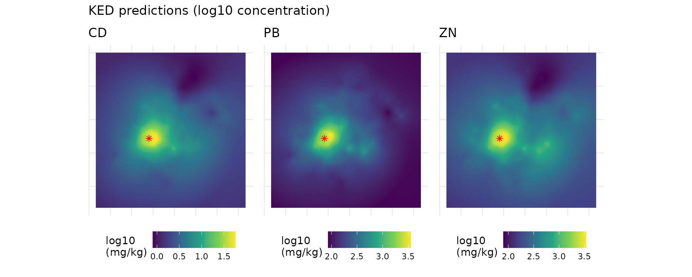
Uncertainty
The kriging standard deviation () is low close to the samples and grows in the margin, where no data are available. It is a useful map to know where the contamination layer, and therefore the whole spacemodR risk assessment, is less reliable.
ggplot() +
geom_spatraster(data = sqrt(soil_maps$cd[["cd_var"]])) +
geom_sf(data = soil_metaleurop, size = 0.3, colour = "white") +
scale_fill_viridis_c(name = "sd\n(log10)", option = "magma") +
labs(title = "Kriging standard deviation of log10(Cd)") +
theme_minimal()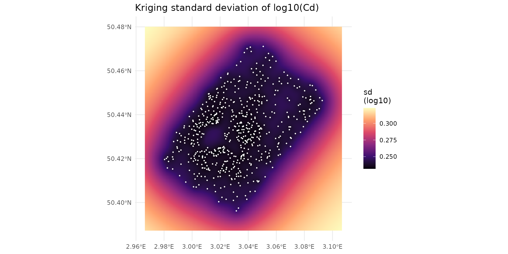
A rough 95% interval of the concentration in each cell is :
sd_cd <- sqrt(soil_maps$cd[["cd_var"]])
interval <- c(10^(soil_maps$cd[["cd_log10"]] - 1.96 * sd_cd),
soil_maps$cd[["cd"]],
10^(soil_maps$cd[["cd_log10"]] + 1.96 * sd_cd))
names(interval) <- c("lower 2.5%", "median", "upper 97.5%")
ggplot() +
geom_spatraster(data = log10(interval)) +
facet_wrap(~lyr) +
scale_fill_viridis_c(name = "log10 Cd\n(mg/kg)") +
theme_minimal() + theme(axis.text = element_blank())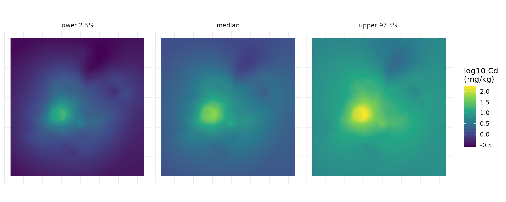
Step 8 — Checks and use in spacemodR
8a. Behaviour far from the samples
The main practical difference between OK and KED lies in the margin of the map. We extract both predictions along a transect starting at the smelter and going to the south-west corner of the map:
ok_cd <- krige_soil(soil_metaleurop, "cd", template = template,
model = "Exp", verbose = FALSE)
ok_cd_packed <- terra::wrap(ok_cd)
corner <- c(xmin(template), ymin(template))
start <- sf::st_coordinates(smelter)[1, ]
s <- seq(0, 1, length.out = 300)
transect <- cbind(x = start[1] + s * (corner[1] - start[1]),
y = start[2] + s * (corner[2] - start[2]))
dist_km <- sqrt((transect[, 1] - start[1])^2 + (transect[, 2] - start[2])^2) / 1000
# last distance with a sample closer than 300 m from the transect
pts_xy <- sf::st_coordinates(soil_metaleurop)
near <- apply(transect, 1, function(p) min(sqrt((pts_xy[, 1] - p[1])^2 + (pts_xy[, 2] - p[2])^2)))
last_sample <- max(dist_km[near < 300])
profile <- rbind(
data.frame(dist_km, value = extract(ok_cd[["cd_log10"]], transect)[, 1], method = "OK"),
data.frame(dist_km, value = extract(soil_maps$cd[["cd_log10"]], transect)[, 1], method = "KED (distance)")
)
ggplot(profile, aes(dist_km, value, colour = method)) +
geom_line(linewidth = 1) +
geom_vline(xintercept = last_sample, linetype = 2) +
annotate("text", x = last_sample, y = max(profile$value), hjust = -0.05,
label = "no more samples beyond this line") +
labs(x = "Distance from the smelter along the transect (km)",
y = "Predicted log10(Cd)", colour = NULL) +
theme_minimal()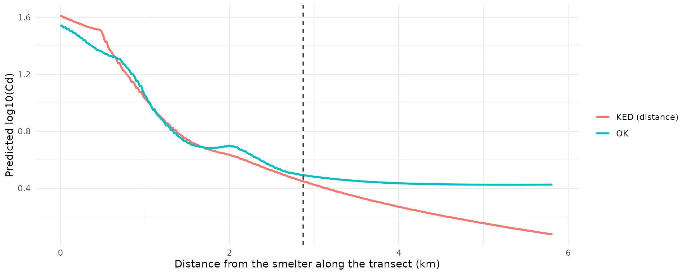
Beyond the last samples, OK goes back to the mean of the data, which is dominated by the many samples taken close to the smelter: it overestimates the contamination far away. KED keeps following the physically sensible decrease with distance.
8b. Comparison with the previous rasters
The rasters shipped in inst/extdata were produced by the
old Python workflow (ordinary kriging). The difference with the new KED
maps:
old_cd <- load_raster_extdata("ground_concentration_cd_compressed.tif")
diff_cd <- soil_maps$cd[["cd_log10"]] - old_cd
names(diff_cd) <- "KED - old OK"
lim <- max(abs(values(diff_cd)), na.rm = TRUE)
ggplot() +
geom_spatraster(data = diff_cd) +
scale_fill_distiller(palette = "RdBu", limits = c(-lim, lim),
name = "difference\n(log10)") +
geom_sf(data = soil_metaleurop, size = 0.2) +
labs(title = "log10(Cd): new KED map minus previous map") +
theme_minimal()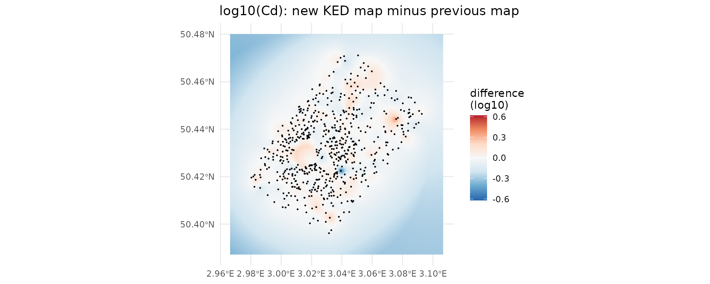
# Inside / outside the convex hull of the samples
hull <- terra::vect(sf::st_convex_hull(sf::st_union(soil_metaleurop)))
inside <- values(terra::mask(diff_cd, hull), mat = FALSE)
outside <- values(terra::mask(diff_cd, hull, inverse = TRUE), mat = FALSE)
rbind(inside = quantile(inside, c(0.05, 0.5, 0.95), na.rm = TRUE),
outside = quantile(outside, c(0.05, 0.5, 0.95), na.rm = TRUE))
#> 5% 50% 95%
#> inside -0.0760046 -0.0002601581 0.10073052
#> outside -0.3041180 -0.1496480143 -0.02294464Inside the sampled area the two maps are close (differences are local and mostly small, they come from the different variogram and from the drift). Outside the sampled area, the new map is systematically lower, because OK reverted to the mean of the data far from the samples (see 8a).
8c. Use in a spacemodR workflow
The resulting layer behaves exactly like the rasters used in the
other articles: it can be saved, masked to a region of interest, and
used as the soil layer of a spacemodel.
# Save the log10 Cd map
terra::writeRaster(soil_maps$cd[["cd_log10"]], "ground_concentration_cd.tif",
overwrite = TRUE)
# Or use it directly, e.g. restricted to the region of interest
data(roi_metaleurop)
ground_cd <- terra::mask(soil_maps$cd[["cd_log10"]],
terra::vect(sf::st_transform(roi_metaleurop, 2154)))Summary: the whole workflow in a few lines
library(spacemodR)
data(soil_metaleurop)
# 1. Source location and covariate raster
smelter <- sf::st_sfc(sf::st_point(c(701156, 7036799)), crs = 2154)
grid <- soil_grid(soil_metaleurop, res = 25, margin = 1000)
dist_cov <- source_covariates(grid, smelter) # layer "log10_dist"
# 2. (optional) inspect the variogram
v <- soil_variogram(soil_metaleurop, "cd", covariates = dist_cov)
plot(fit_soil_variogram(v, model = c("Exp", "Sph", "Gau")))
# 3. (optional) check the prediction error
summary(cv_soil(soil_metaleurop, "cd", covariates = dist_cov, model = "Exp"))
# 4. Kriging with external drift
cd_map <- krige_soil(soil_metaleurop, "cd", covariates = dist_cov, model = "Exp")
terra::plot(cd_map)Appendix — Implementation notes
- The kriging is implemented directly in spacemodR (packages
sf,terraandstatsonly): with a few hundred samples, the kriging system can be solved globally (all samples are used for each prediction). It follows the conventions of the reference package gstat (same variogram models and parameters, same weighted least-squares fit), and gives the same predictions and variances asgstat::krige()(checked to ) for both ordinary kriging and kriging with external drift. - Duplicated sampling locations are averaged (otherwise the kriging
system is singular): this is why the cross-validation tables report
n= 587 instead of 595. - For data sets with strong outliers,
soil_variogram(..., estimator = "robust")uses the Cressie-Hawkins estimator, which is less sensitive to them. - Kernel smoothing reuses
compute_kernel(), the Gaussian kernel used for dispersal in spacemodR.
# Optional check against gstat (only run if gstat is installed)
pts <- soil_metaleurop[!duplicated(sf::st_coordinates(soil_metaleurop)), ]
pts$cd_log10 <- log10(pts$cd)
m <- soil_vgm("Exp", psill = 0.17, range = 2000, nugget = 0.04)
g <- gstat::vgm(psill = 0.17, model = "Exp", range = 2000, nugget = 0.04)
small_grid <- soil_grid(soil_metaleurop, res = 500, margin = 0)
ours <- krige_soil(pts, "cd", template = small_grid, vgm = m, verbose = FALSE)
cells <- sf::st_as_sf(as.data.frame(xyFromCell(small_grid, 1:ncell(small_grid))),
coords = c("x", "y"), crs = 2154)
ref <- gstat::krige(cd_log10 ~ 1, pts, cells, model = g, debug.level = 0)
max(abs(ref$var1.pred - values(ours[["cd_log10"]])))
#> [1] 6.664536e-11References
- Pebesma, E. J. (2004). Multivariable geostatistics in S: the gstat package. Computers & Geosciences, 30(7), 683–691.
- Hengl, T., Heuvelink, G. B. M., & Rossiter, D. G. (2007). About regression-kriging: from equations to case studies. Computers & Geosciences, 33(10), 1301–1315.
- Webster, R., & Oliver, M. A. (2007). Geostatistics for Environmental Scientists (2nd ed.). Wiley.